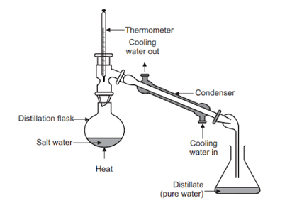

Chưng cất

Image source: Topic 2 image sources
| Vietnamese | Chưng cất |
|---|---|
| English | Distillation (noun) / Distil (verb) |
| Pronunciation | /ˌdɪstəˈleɪʃn/ or /ˌdɪstɪˈleɪʃən/ |
| Word type | Danh từ / Động từ |
Meaning (Vietnamese)
Phương pháp tách các chất lỏng ra khỏi hỗn hợp dựa vào sự khác nhau về nhiệt độ sôi.
Meaning (English)
A method of separating liquids in a mixture based on differences in their boiling points.
Example
Distillation can be used to purify a liquid.
Another definition from the notes
Phương pháp tách chất dựa trên sự khác nhau về nhiệt độ sôi
A method of separating substances based on differences in boiling points.
Another definition from the notes
Separating substances based on boiling points (using a fractionating column for miscible liquids).
Source of information: Topic 2 notes (see Sources)